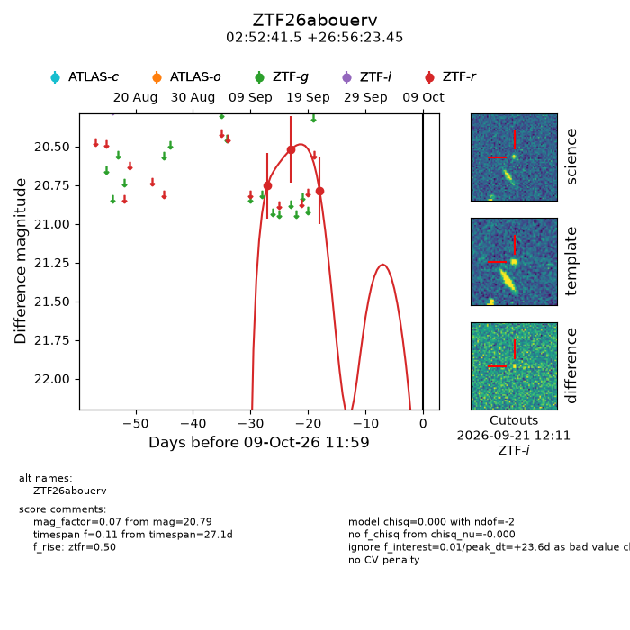
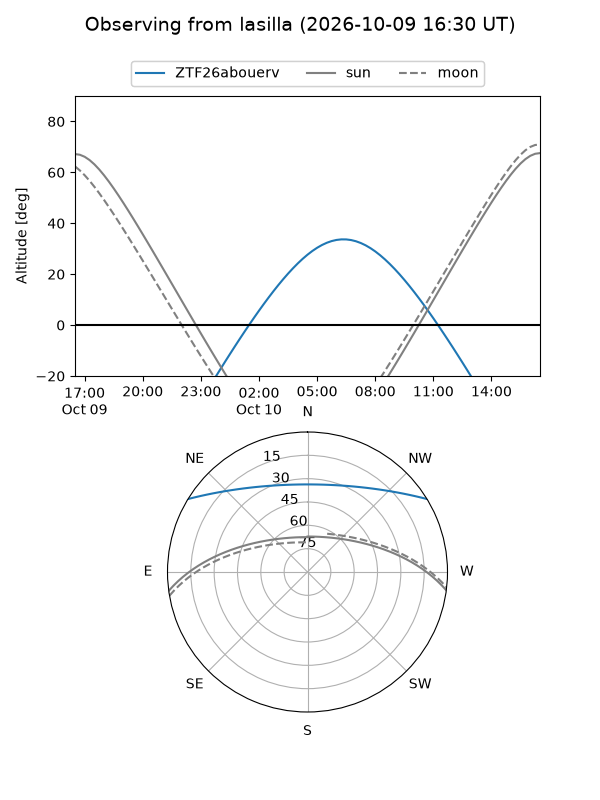
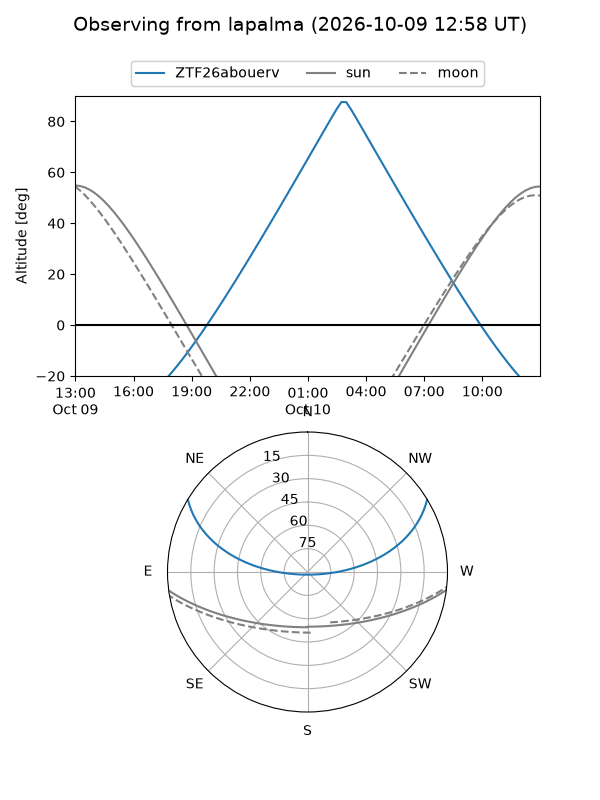
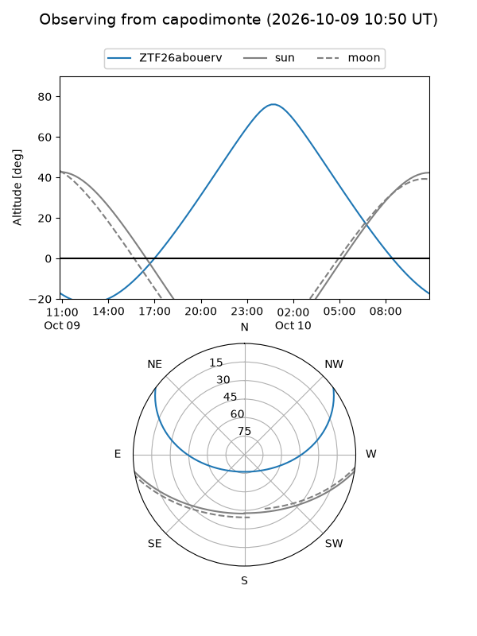
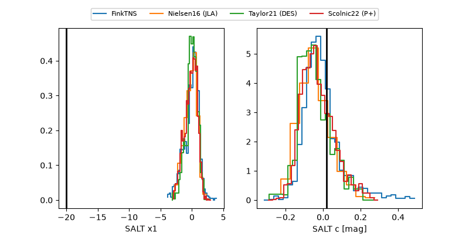

ZTF26abouerv
Target ZTF26abouerv at 2026-10-09 12:01
Aliases and brokers:
FINK-ZTF: ztf.fink-portal.org/ZTF26abouerv
Lasair-ZTF: lasair-ztf.lsst.ac.uk/objects/ZTF26abouerv
ALeRCE-ZTF: alerce.online/object/ZTF26abouerv
Direct TNS query: direct search
alt names
ZTF26abouerv (ztf,fink_ztf)
Coordinates:
equatorial (ra, dec) = 43.1727,+26.93985
equatorial (HMS+DMS) = 02:52:41.45,+26:56:23.45
galactic (l, b) = (153.7543,-28.57754)
Flags:
peak dt: +23.6
Photometry:
last ztfr=20.79
3 ztfr detections
Lightcurve

Visibility



Additional plots
